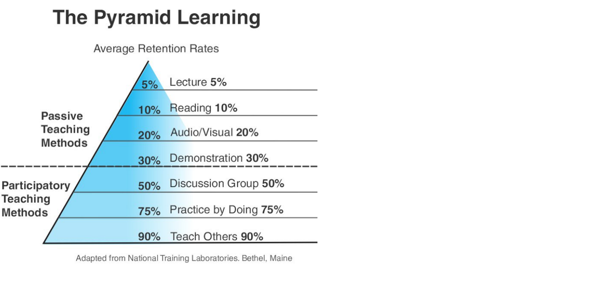

summary:本节是对左耳听风学习章节的摘录 部分更新自己的感悟
高效学习:端正学习态度
主动 or 被动学习

- 被动学习: 听讲 阅读 视听 演示 只有 5% - 30%
- 主动学习: 讨论 实践 教授 50% - 90%
- 只有自己在思考总结归纳 找人交流 开始践行 对外输出才能掌握知识
深度 or 浅度学习
- 浅度学习由于当前的社会环境造成 人们只愿意读一些快餐内容
- 精英会在源头找资料 深度钻研后 通过自己的思考 产生更好的内容 大部分人是 轻度学习 消费内容
掌握升读学习的关键
- 高质量的信息源和第一手的知识
- 把知识连成地图 将自己的理解复述出来
- 不断反思和思辨 与不同年龄段的人讨论
- 举一反三 践行之 把知识转化为技能
- 学习的三个步骤:
- 只有掌握解题的思维和方法 才有解决问题的能力 学习为了找到通往答案的路径和方法 为了拥有无师自通的能力
学习目的:找到原理
- 为了理解思考 一旦掌握本质东西 就会发现复杂多变的世界在变得越来越简单 一通百通
学习目的:了解自己
- 开拓眼界目的是发现自己的不足和上升空间 从而让自己成长
学习目的:为了改变自己
- 改变自己的思维方式 思考方式 改变自己与生俱来的低效学习方法 改变自己 行动和践行 反思和改善 从而获得成长
高效学习:源头、原理和知识地图
挑选知识和信息源
- 用google 英文关键词找到自己想要的知识 算是跟得上时代 / 在社区里和大牛交流得到答案 算是领先时代
- 信息源的特质:
- 基础知识和原理东西很重要
- 比如学了足够多的语言 有丰富的实践后 开始对编程语言的各种编程范式或控制流有原理上的了解 再学新的语言 就会学的飞快
- 关键:基础知识和原理性的东西技术 都是经过长时间的考验的 所以基础技术有很多人类历史的结晶会带来很多启发
使用知识图 – 俗称脑图
- 作者将c++学习内容 用联想记忆法分为三部分
系统学习
- 学习技术的时候 需要问自己很多个为什么? 更加高级的脑图 以下是学习模板 把内容都填充式:
- 1.技术出现的background purpose initial_intense是要解决什么问题很关键 学习技术时候需要直到技术的成因和目标 是这个技术的灵魂 不知道的话 会不懂技术的设计理念
- 2.技术的pros/cons – trade-off:清楚技术的优势劣势 以及带来的挑战
- 3.这个技术适用的场景一旦离开场景 会有槽点 场景一般分2个:业务场景 和技术场景
- 4.技术组成部分和关键点技术的核心思想和核心组件 快速掌握是学习技术的核心部分
- 5.技术底层原理和关键实现学习关键基础底层技术可以让你未来很快掌握其他技术
- 6.已有的实现和它之间的对比不同的实现有不同侧重 可以得到不同的想法和思路 对于开阔眼界 深入细节很重要
举一反三
包括以下基础能力:
- 联想能力:需要平时不停思考同一件事物不同用法(scott的高效学习就有讲过这种技能的培养)
- 抽象能力:我理解成建模能力 就是把现实的问题抽象成数据结构或者算法
- 自省能力:得到解的时候 要站在自己的对立面来找解的漏洞 像左右互搏
训练方法:
- 1.对于同一个场景 制作各种不同的难题问题
- 2.对于一个问题 努力寻找尽可能多的解 比较这些解的优劣
- 3.对于一个解 努力找各种不同的测试案例 让其健壮
需要喜欢思考和找别人来辩论讨论 看自己是否真的善于思考 是否有好奇心
总结和归纳
该过程对知识的消化和再加工
积累的知识越多 在知识间进行联系和区别能力越强 对知识总结概括能力越轻松
要提高能力 要多阅读 积累素材 扩大知识面 和别人讨论 多思辨
当没有学透知识 不适合归纳总结 开始阶段不急于判断作结论 对知识保持开放
把看到和学到的信息 规整好 排列好 关联好 把信息碎片结构化掉 在结构化的信息里找规律相通之处 共同点 进行简化 归纳总结 最后形成套路模式
实践出真知
作者借用他看的effective c++和more effective c++来举例 被书中的作者所折服 作者看了十多年 宝贵的是书中作者的思维方式
坚持不懈
需要有循环的坚持
需要把你的坚持形成成果晒出来 让别人点赞 另一方面 要把坚持作为习惯 到一种吃饭喝水的状态 不需要付出成本
高效学习:如何学习和阅读代码
读文档还是代码
代码 => what how details
文档/书 => what how why
如果像know人为什么这么搞 多去读书 文档
如果要知道让机器干了什么 就去看代码
都很重要 需要看目的
如果想了解一种思想方法原理思路经验 读书和文档有效率
如果了解具体细节 如协程实现 模块性能 算法实现还是去读代码
不同阶段的人
- 新手 应该多读代码 动手写代码 新手会喜欢github
- 老手 需要理性认识 喜欢读好的书和文章
如何阅读源代码
- 需要掌握以下前提:
- 基础知识
- 软件功能
- 相关文档
- 代码的组织结构
- 然后了解软件代码的组成部分
- 1.抽象接口定义
- 2.模块粘合层
- 3.业务流程
- 4.具体实现
- 代码逻辑:业务逻辑+控制逻辑(flag控制变量)
- 出错处理
- 数据处理
- 重要的算法
- 底层交互
- 5.运行时调试
- 总结阅读代码方法:
如何面对大量知识:
- 一点点学 一口口吃
- 在学习 一定要学到本质 原理 这是经得住考验的
- 带着问题去学习 带着要解决的东西去学习
- 把学习心得 过程 笔记 代码分享出来 找到一起学习的人
认真read docs
- git操作文档 linux的man
其他几个适用技巧
- 用不同的方式来学习同一个东西如看树 听课 创建脑图 写博客 讲课
- 不要被打断找一个别人找不到的地方
- 总结压缩信息 高效学习有讲过类似的方法 将一门课的重点压缩成2-3页内容
- 把未知关联到已知类比把 如go语言 对比c java来学
- 用教的方式来学习 教给别人自己会掌握95%的知识
- 学以致用 学到的知识为了运用 可以巩固强化学习
- 不要记忆 找方法 推导出结果的方法
- 多犯错误 通过错误总结教训 没有比犯错体会的更深 不要犯低级错误